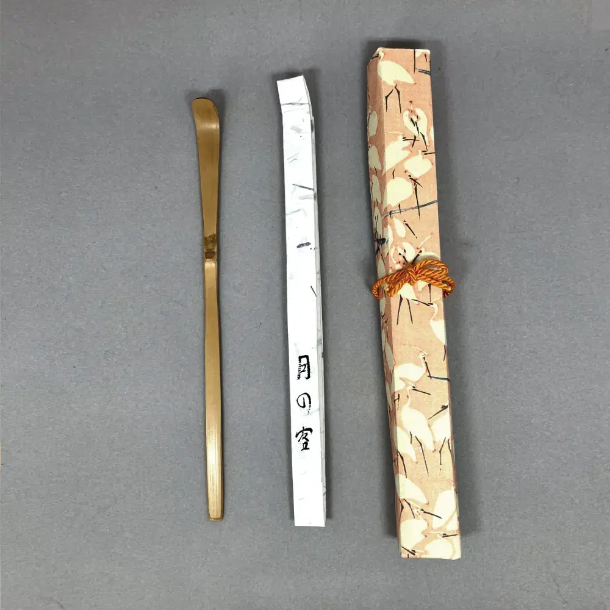
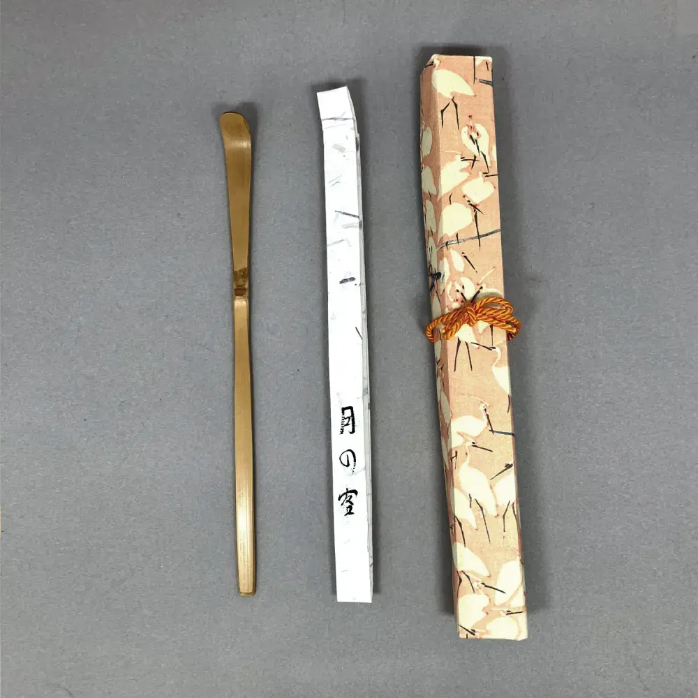

Indian Summer 「小春」
unknown maker 20 CHF


Indian Summer「小春」
In late autumn, days can still be surprisingly warm and mind. Skies are clear because it is dry, temperatures are warm and the leaves of the trees are turning exceptionally red and orange. These small springtimes invite you to go out and visit the beautiful sceneries of forests changing their colour; quite similar to the cherry blossom viewings in (actual) spring. Comes with a paper box for the tea scoop.
The price includes only the items described above; any other objects in the pictures are for size comparison and illustration only.
Buy (tea scoop, for 20 Swiss francs) Close Window
Old Calendar 「暦手」
made by Asami Yoshizō 90 CHF


Old Calendar「暦手」
made by Asami YoshizōThis style of tea bowl is traditionally used on New Year's Eve, but it could also be used for birthdays or other moments that mark the turning of time. The reason for this is its æ´æ‰‹ pattern, with the 12 lunar months of the year.
It is made by a prolific 清水焼 artist in Kyōto, and comes with a wooden and an outer paper box.
The price includes only the items described above; any other objects in the pictures are for size comparison and illustration only.
Buy (tea bowl, for 90 Swiss francs) Close Window
Main Soup Bowl 「煮物碗」
unknown maker 40 CHF


Main Soup Bowl「煮物碗」
The main course in the 懐石 meal is something simmered and served in a light, clear broth. It is usually something seasonal, delicately arranged; like a steamed fish dumpling or some seasonal vegetables; and invariably served in a bowl. The course hence is also called 椀盛, with 碗 meaning bowl.
These bowls are lacquered in the 柿合せ style, which allows the wood grain to be seen. This is a set of five bowls with matching lids, which I bought in 2018 on rikyucha, and have used it twice since. It is made from lacquered, compressed wood powder (so what appears to be wood grain here is probably not real). Comes with a cardboard box.
The price includes only the items described above; any other objects in the pictures are for size comparison and illustration only.
Buy (cooking utensil, for 40 Swiss francs) Close Window
Morning Glory 「曙」
made by Hisato Kokuryō 180 CHF


Morning Glory「曙」
made by Hisato KokuryōA soft red 楽-style tea bowl with almost an orange hue, with a small indentation at the bottom of the bowl that makes it particularly suitable for 茶の湯. The artist called it 曙, a name that makes this bowl particularly suitable for the New Year; but also any time a feeling of a 初心 is called for.
The artist was a tea practitioner himself, and passed away in 2020, after having won several awards.
Comes with the artist's box, the calligraphy on which is written by 表千家 XII
The price includes only the items described above; any other objects in the pictures are for size comparison and illustration only.
Buy (tea bowl, for 180 Swiss francs) Close Window
Night Sky Cherry Blossoms 「夜桜」
made by Sakura kiln 80 CHF


Night Sky Cherry Blossoms「夜桜」
made by Sakura kilnThis tea bowl I like particularly for the glaze: parts of the bowl are covered in what looks like oil drops, or to the more poetic mind, like cherry blossom petals, or 夜桜, in the night sky. It is contemporary 薩摩焼, but made closer to the old style, which uses a dark clay and a dark glaze.
The price includes only the items described above; any other objects in the pictures are for size comparison and illustration only.
Buy (tea bowl, for 80 Swiss francs) Close Window
Gingko-Pattern Silk 「帛紗」
made by Tatsumura Art Textiles 70 CHF


Gingko-Pattern Silk「帛紗」
made by Tatsumura Art TextilesThis is a purification cloth that is usually sent to you by 裏千家 when you reach 茶銘. It is made from a very strong silk, and has the 今日庵 gingko-patterns on it. I had found this on a flea market in Japan. Comes with a (repurposed) paper box.
The price includes only the items described above; any other objects in the pictures are for size comparison and illustration only.
Buy (cloth, for 70 Swiss francs) Close Window
The Jade Boat 「玉船」
unknown maker 190 CHF


The Jade Boat「玉船」
The name 玉船 is used in Chinese poetry, and describes a vessel for serving rice wine in a courtly setting. One poem in particular comes to mind: I sit by the red fireplace, and pour from the Jade Boat a golden cup. It suits this very special tea scoop, with its three nodes and intense shape.
I matched it with a cloth called 阿è˜é™€é–“é“, where the first three characters stand for the Netherlands. While the Dutch arrived first in Japan only in 1600, their wares had already made it into Japan before them through the Portuguese, who used the word Hollanda to refer to them, and so the Japanese word still is: オランダ or 阿è˜é™€.
Includes the 古帛紗 and the tea scoop, both in their own paper box.
The price includes only the items described above; any other objects in the pictures are for size comparison and illustration only.
Buy (tea scoop, for 190 Swiss francs) Close Window
Water-Mountain through a Round Window 「円窓山水紋」
unknown maker 30 CHF

Water-Mountain through a Round Window「円窓山水紋」
The more common variant of this pattern is in yellow on a red background, but with this colour scheme, the intricate sceneries seen through the round windows are easier to make out. Comes with a paper box.
The price includes only the items described above; any other objects in the pictures are for size comparison and illustration only.
Buy (cloth, for 30 Swiss francs) Close Window
Sweetfish Trap 「é®ç± ã€
unknown maker 80 CHF


Sweetfish Trap「é®ç± ã€
This flower vase is shaped like a basket used to catch the beloved 鮎. It's made to be hung on the wall, and is very suitable for summer, evoking a sense of cool river streams with lively fish. Comes with a paper box.
The price includes only the items described above; any other objects in the pictures are for size comparison and illustration only.
Buy (flower vase, for 80 Swiss francs) Close Window
Parting Stars 「別星」
unknown maker 70 CHF


Parting Stars「別星」
This name alludes to 七夕 and the two starts Vega and Altair, representing two lovers that cannot be together. 小林一茶 wrote a poem about the sadness of their separation, saying: In this world, even the stars are separated. Naturally, it evokes a mood of autumn loneliness and melancholy. This tea scoop has a few dents near the tip; and also the cloth has a few stains. The scoop comes with a tube and paper box; the cloth with a cardboard box.
The price includes only the items described above; any other objects in the pictures are for size comparison and illustration only.
Buy (tea scoop, for 70 Swiss francs) Close Window
Neither hot nor cold 「無感情」
made by Okada Saburo 170 CHF


Neither hot nor cold「無感情」
made by Okada SaburoA student asked the monk 洞山良价 how he should deal with the cold and the heat. 洞山 replied: Just go where it's not cold nor hot. But in saying this, he did not mean to travel to such a place, but instead to be like the water ladle we use in the tea ceremony. It doesn't feel the heat of the 釜, nor does it shiver when we scoop cold water with it, because it has no mind. I would use this scoop when the seasons are particularly strongly felt.
The maker was a successful bank owner who also was a practitioner in the Japanese tea ceremony. He carved many tea scoops and bamboo utensils, preferably from bamboo he obtained from old temples. Comes with a paper box.
The price includes only the items described above; any other objects in the pictures are for size comparison and illustration only.
Buy (tea scoop, for 170 Swiss francs) Close Window
The Village where Flowers Fall 「花散里」
unknown maker 70 CHF


The Village where Flowers Fall「花散里」
This tea scoop is made from sooty bamboo. It shares the name with chapter 11 in the famous Tale of Genji: 花散里, which means flowers scattered across the village. In this chapter, Prince Genji spends a rainy summer afternoon speaking about the days of yore and enjoying the scent of the fallen citrus blossoms called 橘.
I think that in this tea scoop you find a similar strength and melancholy. It is particularly suitable for summer; and comes with a paper box.
The price includes only the items described above; any other objects in the pictures are for size comparison and illustration only.
Buy (tea scoop, for 70 Swiss francs) Close Window
Nothung 「ノートゥング」
made by Okada Saburo 130 CHF


Nothung「ノートゥング」
made by Okada SaburoThe tea scoop is the sword of the tea master, they say, and thus this tea scoop is named after an actual sword ⸺ probably the sword of Nordic sagas. In Wagner's operas it is called Nothung, in Norse mythology Gram, and in other versions of the story again Balmung. It is the sword the shards of which the hero of the saga inherits; reforges them to a new sword and allows him to slay the dragon. For the tea ceremony, I think the aspect of the reforging is particularly interesting; and makes this tea scoop particularly suitable for October.
It was carved by a Japanese businessman who also practised tea ceremony and liked to carve tea scoops from old temple bamboo. It comes with a bamboo tube, which I have added, just as the name, ex-post; and a paper box.
To tame the bold name and shape a tad, I'm pairing this with a pink 帛紗 with gingko prints. The cloth comes its own cardboard box.
The price includes only the items described above; any other objects in the pictures are for size comparison and illustration only.
Buy (tea scoop, for 130 Swiss francs) Close Window
The Rice Planting Girl 「早乙女」
made by Okada Saburo 170 CHF


The Rice Planting Girl「早乙女」
made by Okada SaburoTraditionally, 早乙女 refers to the women who plant rice in the paddy fields during the early summer, a time crucial for the rice-growing cycle in Japan. The act of planting rice is not only vital for agriculture but is also steeped in cultural rituals and festivals that celebrate and honor the agricultural heritage of Japan.
This tea scoop invokes the imagery and essence of early summer, reflecting a connection to the land and the cyclical nature of the seasons. This choice symbolizes a reverence for the labor and dedication of rice planters and emphasizes the harmonious relationship between human activities and nature's rhythms.
The maker was a successful bank owner who also was a practitioner in the Japanese tea ceremony. He carved many tea scoops and bamboo utensils, preferably from bamboo he obtained from old temples. The tea scoop comes with the author's tube, and a paper box.
The price includes only the items described above; any other objects in the pictures are for size comparison and illustration only.
Buy (tea scoop, for 170 Swiss francs) Close Window
Moon's Guest 「月の客」
made by Nico Čolić 30 CHF

 

Moon's Guest「月の客」
made by Nico ČolićThis is a tea scoop I carved to suit a particularly large tea bowl akin to the famed 勢多 tea scoop that 利休 carved to match his student's large 水海 tea bowl.
The 月の客 is the moon's guest, or more bluntly, a person looking at the moon. It comes from a poem by èŠè•‰'s student 去来: 岩鼻やã“ã“ã«ã‚‚ã²ã¨ã‚Šâ€”月ã®å®¢. Here at Iwahana somebody is watching the moon, too. It's quite evokative of an autumn night; and there's quite some room for interpretation who this 月の客 is: Is it the author? Is it somebody else?
The cloth I'm pairing this tea scoop with suits the cold elegance of the moon; but unfortunately, has some small stains. The tea scoop comes in a paper box.
The price includes only the items described above; any other objects in the pictures are for size comparison and illustration only.
Buy (tea scoop, for 30 Swiss francs) Close Window
First Laughter 「初笑」
unknown maker 30 CHF


First Laughter「初笑」
January is a month of firsts: 初夢, 初釜 and æ›¸åˆ are quite famous, but there are many other, quite important things, such as 初笑, the first laughter of the year. It is thus a good tea scoop for January, and lends lightness to the otherwise more austere mood of thick tea.
Comes with a paper box.
The price includes only the items described above; any other objects in the pictures are for size comparison and illustration only.
Buy (tea scoop, for 30 Swiss francs) Close Window
Faraway Thunder 「万雷」
unknown maker 80 CHF


Faraway Thunder「万雷」
This tube-shaped tea bowl was purchased at the now-closed è¬ç å ‚ store in Kyōto. Its shape lends itself to be used in winter, and its name 万雷 invites you to enjoy a warm bowl of tea while outside a storm is drawing near. Comes with a cardboard box.
To support this tempestial theme, I am pairing this bowl with a 帛紗 called 瑞鶴, which is favoured by 鵬雲斎. The silk of this cloth is very stiff; and it comes in a repurposed paper box.
The price includes only the items described above; any other objects in the pictures are for size comparison and illustration only.
Buy (tea bowl, for 80 Swiss francs) Close Window
Charcoal Vessel 「鉄台十能」
unknown maker 70 CHF


Charcoal Vessel「鉄台十能」
Used to transport burning charcoal, and to ignite unlit ones, using a gas stove. Used frequently, but in good condition; purchased originally on rikyucha. Comes with a cardboard box.
The price includes only the items described above; any other objects in the pictures are for size comparison and illustration only.
Buy (preparation, for 70 Swiss francs) Close Window
Pure and Impertubable 「静寂」
made by Beatrix Sturm-Kerstan 180 CHF


Pure and Impertubable「静寂」
made by Beatrix Sturm-KerstanThis is a tea bowl from the late German ceramicist Beatrix Sturm-Kerstan, who passed away in 2023. She had made tea bowls specifically for tea for almost 20 years from German clay. Its colour makes me think of the bottom of the ocean, where nothing moves and all is quiet; and so I gave it the name 静寂. It comes in a repurposed paper box.
I'm pairing it with a presentation 帛紗 with a crest to commemorate this great artist. The silk comes with its own paper box.
The price includes only the items described above; any other objects in the pictures are for size comparison and illustration only.
Buy (tea bowl, for 180 Swiss francs) Close Window
Games and Laughter 「福笑」
unknown maker 280 CHF


Games and Laughter「福笑」
This simple 萩焼 tea bowl's soft pink hue reminds me of the 葩餅, which is traditionally eaten in January. I thus named it 福笑, which is also used at the beginning of the New Year.
The bowl broke during transport, so it was repaired by Ursula Kaspar in Switzerland using traditionally 銀継. It turns out that the name was well-chosen, given that in German we say Scherben bringen Glück ⸺ the 福 in 福笑 meaning good luck, as well.
The price includes only the items described above; any other objects in the pictures are for size comparison and illustration only.
Buy (tea bowl, for 280 Swiss francs) Close Window
Forest Bath 「森林浴」
unknown maker 30 CHF


Forest Bath「森林浴」
This is a plain bamboo tea scoop with some interesting details near the bottom and close to the node. It feels refreshing and elegant, like a walk in the forest. Its name, 森林浴 literally translates as forest bathing, or, more scientifically, as silvicotherapy. While people have always enjoyed the calm serenity of a forest, the term gained popularity in the 1980s, where people try to reconnect to nature.
In this view, you can not only find the simple meaning of enjoying nature, but also the post-industrial desire and struggle of mankind to undo the damage that we have done to nature. Comes with a paper box.
The price includes only the items described above; any other objects in the pictures are for size comparison and illustration only.
Buy (tea scoop, for 30 Swiss francs) Close Window
Shell of the Locust 「空蝉」
made by Okada Saburo 110 CHF


Shell of the Locust「空蝉」
made by Okada SaburoThe name is a pun in several ways: First of all, in itself, the shell of the locust is quite a poetic symbol. We need to leave our former selves behind to grow. But it is also the name of a character in the Tale of Genji; a lady that is not necessarily beautiful, but impressed Prince Genji with her stout behaviour and good taste. In my opinion, this aspects suits the simple, yet elegant make of this tea scoop.
Lastly, however, the word ç©ºè‰ itself is interesting. It usually means a living being in general, instead of the locust shell. This is because the characters used to write this word were added ex-post for their sounds rather than their meaning; and with time, the word also got the meaning of hollow locust.
With circadas being a strong summer motif, this tea scoop might be most suitable in summer; but with the more philosophical interpretation of its name, it also lends itself to all-year use for thick tea. It comes with a paper box and bamboo tube. The bamboo tube was added later on, and is not made by the original maker of the scoop.
The maker was a successful bank owner who also was a practitioner in the Japanese tea ceremony. He carved many tea scoops and bamboo utensils, preferably from bamboo he obtained from old temples.
The price includes only the items described above; any other objects in the pictures are for size comparison and illustration only.
Buy (tea scoop, for 110 Swiss francs) Close Window
Evening Prayer 「晚課」
unknown maker 110 CHF


Evening Prayer「晚課」
This is a tea scoop with the node at the end, so it is used canonically only for certain higher preparations. The name thus is suitable: During the evening chanting of sutras, the monks purify themselves of the metaphysical dust they've accumulated during the day; just like the tea scoop is purified of the metaphysical dust that is the tea.
It is paired with an unusual cloth: A fabric napkin from the 60s, produced by Zurich company Mavir for Swissair first class flights. It is slightly smaller than a normal 古帛紗, and is delivered with a repurposed 古帛紗-cardboard box.
The price includes only the items described above; any other objects in the pictures are for size comparison and illustration only.
Buy (tea scoop, for 110 Swiss francs) Close Window
Cedar Tray 「八寸盆」
unknown maker 10 CHF


Cedar Tray「八寸盆」
This tray is traditionally used to serve little nibbles to go with sake; usually something from the sea and something from the mountains. It is an essential part of the tea ceremony, as this is the one time when the host actually sits down with the guests and shares a cup of sake with them. Ulrich Haas explained once that you can leave away most things of the formal tea invitation, except for this sequence called 八寸, the charcoal laying and the actual tea.
The tray itself was used twice, and is slightly damaged at the top left corner for being stored in too dry an environment. Comes with its paper box.
The price includes only the items described above; any other objects in the pictures are for size comparison and illustration only.
Buy (cooking utensil, for 10 Swiss francs) Close Window
rice wine cups 「盃」
unknown maker 65 CHF


rice wine cups「盃」
During the meal that precedes the tea ceremony, also rice wine is served. While normally, rice wine is consumed from ceramic cups, during a tea gathering, it is served in a more ceremonial fashion: the very shallow 盃, a plate more than a cup, really, which holds enough liquid for just a few small sips. Serving the 酒 in this way, it feels very precious.
The set comes with a 盃台, a stand for the five individual cups. The entire set I bought in 2018 on rikyucha, and have used it twice since. It is made from lacquered, compressed wood powder. The stand and the cups come with a paper box.
The price includes only the items described above; any other objects in the pictures are for size comparison and illustration only.
Buy (cooking utensil, for 65 Swiss francs) Close Window